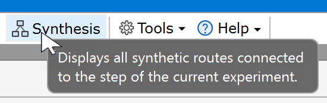
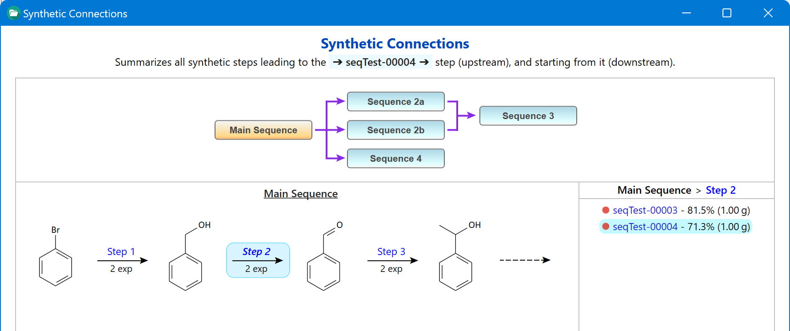
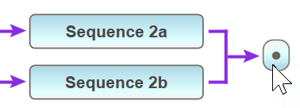

Synthetic Connections
A chemical synthesis consists of one or multiple subsequent steps leading from starting material to target product. In the simplest case this is a linear step sequence. However, also more complex scenarios are possible, where the synthetic pathway consists of multiple sequences branching off or merging while work is progressing.
Synthetic Connections analyzes the reaction sketches of all local experiments towards a complete tree of synthetic routes leading to, or away from the current experiment (the one currently displayed in the ELN). This functionality is accessible from the main toolbar:

The resulting synthetic routes are summarized in a flow scheme consisting of step sequences (upper part of image below), which are revealed in the lower part after selecting a specific sequence.

The detected synthetic routes include both upstream and downstream sequences, if present (our example just contains downstream ones for simplicity). The sequence containing the current experiment is titled "Main Sequence". Sequences stop whenever no more subsequent step is found, or when their last product is shared by multiple downstream sequences (i.e. when branching off). Thus, in our example, "Main Sequence" branches off into the individual sequences 2a, 2b, and 4, meaning that the intermediate produced by "Main Sequence" was utilized as starting material for the subsequent 3 sequences.
Sequences also will end when they merge, i.e. when they contain an intermediate which is also part of another sequence, as demonstrated for the sequences 2a and 2 b merging into the common sequence 3. Merging sequences are assigned an identical sequence number, followed by the suffix a, b, c, etc. (i.e. 2a and 2b in our example). Upstream sequences, i.e. the one leading to your current experiment, are assigned negative numbers, e.g. 'Sequence -3'. Sequences also can merge into a single product instead of a sequence, if the synthesis ends at this point. This situation is represented by a single dot box:

Interactions
Clicking a sequence in the graph reveals the chemical structures of the sequences it contains, where the step number of the current experiment step is highlighted in bold-italic font.
Clicking a step arrow reveals all experiments sharing this step, sorted by decreasing yield.
Clicking an experiment in the list to the right opens it in the ELN for examination. Although this changes the current experiment, the connection graph remains based on the initially current experiment.